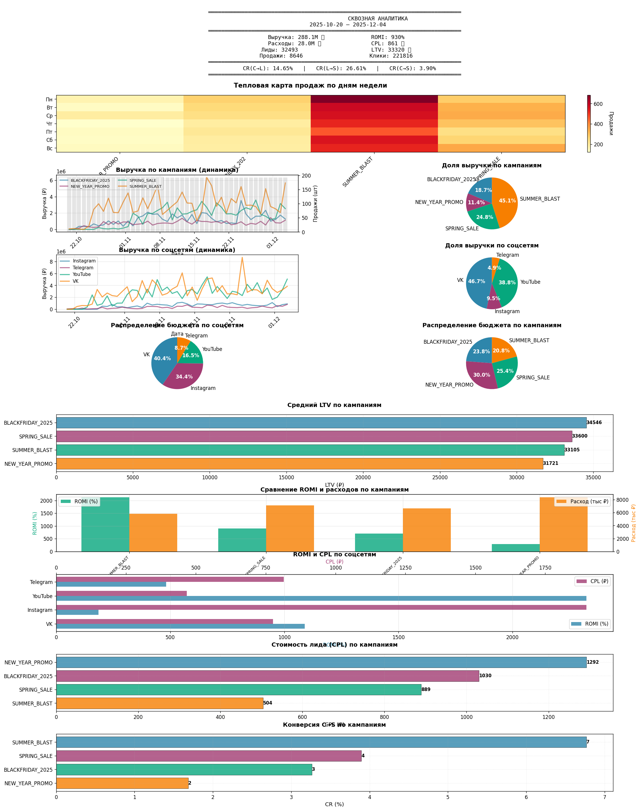
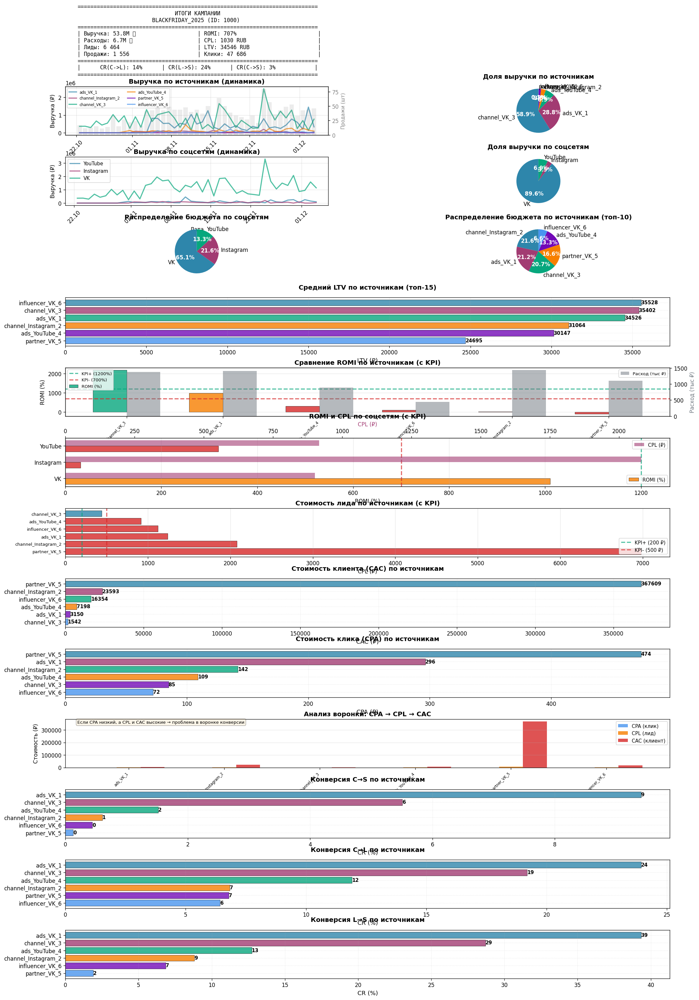

График 1 - Сквозная аналитика
Полный обзор всех кампаний за период
📋 Содержание графика:
- Шапка - основные метрики (выручка, ROMI, CPL, LTV, конверсии)
- Тепловая карта - продажи по дням недели и кампаниям
- Динамика выручки - по кампаниям с полупрозрачными кривыми
- Пирог выручки - распределение по кампаниям
- Динамика по соцсетям - выручка по Instagram, Telegram, YouTube, VK
- Пирог соцсетей - доля каждой соцсети
- Распределение бюджета - по соцсетям и кампаниям (2 пирога)
- Средний LTV - по кампаниям (горизонтальный график)
- Сравнение ROMI - вертикальные столбики с расходами
- ROMI и CPL - по соцсетям (двойной горизонтальный)
🎯 Для кого
Для менеджеров и руководителей, которым нужен общий обзор всех рекламных кампаний
⏱️ Период
Настраивается: 7 дней, 30 дней, 90 дней или любой произвольный период
🔄 Обновление
Автоматическая генерация по расписанию или по запросу через телеграм-бот

График 2 - Детальная аналитика по кампании
Глубокий анализ конкретной кампании
📋 Содержание графика:
- Шапка кампании - детальные метрики, топ источники, худшие источники
- Выручка по источникам - динамика каждого RID + пирог распределения
- Выручка по соцсетям - динамика внутри кампании + пирог
- Бюджет - распределение по соцсетям и источникам (2 пирога)
- LTV по источникам - топ-15 (горизонтальный график)
- ROMI по источникам - с линиями KPI и цветовым кодированием
- ROMI по соцсетям - с линиями KPI и CPL
- CPL по источникам - с линиями KPI
- CAC - стоимость привлечения клиента
- CPA - стоимость клика
- Анализ воронки - CPA → CPL → CAC (выявление просадок!)
- CR(C→S) - конверсия клики → продажи
- CR(C→L) - конверсия клики → лиды
- CR(L→S) - конверсия лиды → продажи
🎯 Для кого
Для специалистов по таргету, которым нужен детальный анализ эффективности каждого источника
🔍 Особенности
Включает линии KPI (положительный и отрицательный) с цветовым кодированием столбиков
📊 Анализ воронки
Уникальный график CPA→CPL→CAC помогает найти просадки в воронке конверсии

Дополнительные возможности
Что еще умеет система
🚨 Система алертов
Автоматическое обнаружение 10+ типов аномалий: падение ROMI, рост CPL, источники без трафика, корреляция пиков с запусками
🔄 Сравнение периодов
Автоматическое сравнение неделя к неделе и месяц к месяцу по всем ключевым метрикам
📄 Текстовые отчеты
Форматированные карточки кампаний и текстовые отчеты для отправки в телеграм-бот
🎨 Настройка
Гибкая настройка KPI, цветовой схемы, размеров графиков под ваши требования
🔗 Интеграция
Легко интегрируется с любой БД и телеграм-ботом. Готовые примеры кода
⚡ Производительность
Быстрая генерация графиков, оптимизированная работа с большими объемами данных